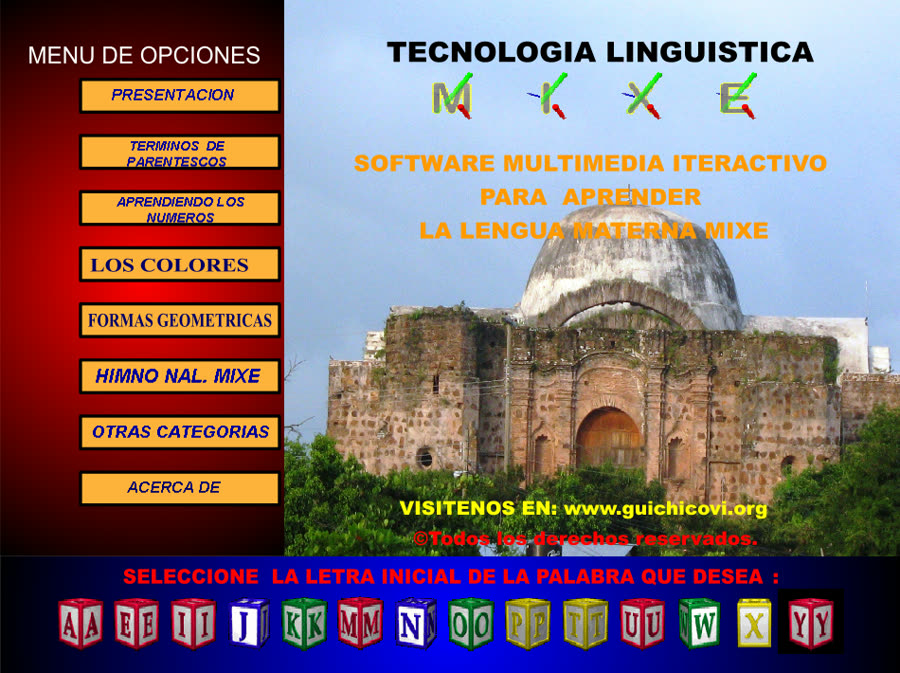

Himno Nacional Mexicano en Mixe
Nëëawiimpë’ëy
Nëëawiimpëdëjk pëdë'këm tsiptuumbë ja mguaay ja mdujt aixëdya'ag, ja juuny byujxt ween naaxwiinbë yajtsëyúy ko ja tujt ko ja joky y'awaandsë'ëy.
Wë'ënda'ads!, yajkudëgóy ja axëëkpë ja agujk ja jotkujpë nebyë pii'pë, nej myamiiny nej myaga'ay ma tsajpootyp ma kyujaay ma kyugeedsy ja jugëëny.
Ko wiing jya'ay myédsët madsibëëbyë ma mnëëawiimb, ma mnaaxwiinbë je'e tyeky'ëjxën kajpt jya'ay, tajmáy mnëëxmajk, ja kyajpt ja nyaax nyëwa'anaamby.
¡Naaxwiin, naaxwiin! nyë'adsooby ja m'uung miidsy kyëxpë jugyájt nyëdújky, ko ja xuuxt yaaxtsooy tsiptuumbë nya'adënaaby jyëjtënaaby jotmëjtëjk.
Xuu'pë pëjy xuu'pë ujts nyajna'adíjpy jamyejtsëëk myajmamëëy tsajpootyp, ja kyu'udëgén yajxón wyinmaay jamyejtsëëk naaxjút je'e nyëgeek.
Traductores oficiales: Profes. Isabel Méndez Rosas, Gina Cruz Iturbe, Atelvina Zacarías Glez., Herlinda Montero López, Alicia Hdez. López, Suilma Antonio Cruz, Medardo Bailey Bustamante, Apolinar Luis, Gildardo Luis, Constantino Antonio Ignacio, Rutilio Escobar y Baltazar Arnulfo T. Escuela Primaria Bilingüe «Julio de la Fuente», San Juan Guichicovi, Oaxaca.
Historia del proyecto
El Ayuuk de San Juan Guichicovi, en la zona húmeda del Istmo de Tehuantepec, había llegado hasta nuestros días solo de forma oral, de generación en generación. No existía un diccionario en Mixe, y quienes querían aprenderlo no tenían cómo consultar su escritura ni su pronunciación.
-
2009
Nace el CD Tecnología Lingüística Mixe
Pablo Galeana Bailey, entonces catedrático del Campus Matías Romero de la Universidad del Golfo de México, diseñó y programó en Flash un diccionario multimedia interactivo como parte del Programa de Alfabetización en Lengua Ayuuk (Mixe bajo). Lo hizo solo, en su tiempo libre y sin apoyo institucional.
Reunió cerca de 1,200 palabras recogidas directamente de la voz y el uso cotidiano de las comunidades de habla Mixe, con su escritura, su traducción al español y su pronunciación grabada. Las organizó por letra inicial y por temas: parentesco, números, colores, formas geométricas, animales, insectos, fenómenos naturales y naturaleza. Incluyó también el Himno Nacional Mexicano en Mixe.

Pantalla principal del CD original (2009). -
¿Por qué?
Aprender escuchando
En una encuesta a 31 alumnos de la Primaria Bilingüe Julio de la Fuente y del COBAO plantel 29 de Guichicovi, 30 no conocían ningún diccionario en Mixe y 22 dijeron haber aprendido la lengua escuchándola. Por eso el audio fue desde el inicio el corazón del proyecto.
-
Gaceta UGM
Reconocimiento
La Gaceta de la Universidad del Golfo de México presentó el proyecto como parte de su propósito de mantener vivas las costumbres y tradiciones de sus alumnos.
-
2026
Del CD a la web
Diecisiete años después, el diccionario se migró a la web para que cualquiera pueda usarlo desde un celular. Las grabaciones originales se recuperaron del CD, se limpiaron y se emparejaron palabra por palabra. Hoy reúne 1,191 palabras y casi todas tienen su voz.
-
Lo que sigue
Tu voz también cuenta
Algunas palabras todavía esperan una voz. Si hablas Ayuuk y quieres sumar la tuya a este acervo, escribe a 1ngbyt3@gmail.com.